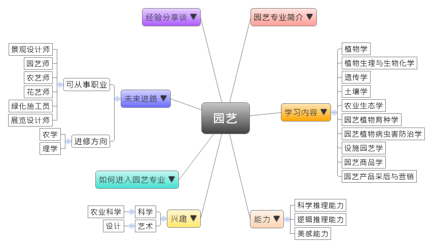
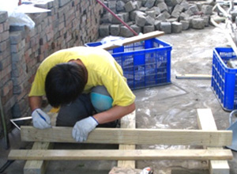
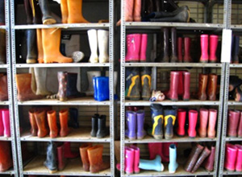

- 专业大观园
-

- 专业介绍
-
什么是园艺专业？
四年一次的 “中国花卉博览会”，将我们平常习以为常的花草树木，结合场地规划与展场设计，所展现的美丽力量令参观民众印象深刻！
园艺将生活中常见的农作物，进行种植、培育、改良或设计等步骤，产出日常生活吃的蔬果、食 品加工物，到庭园景观设计、园艺治疗等。若再结合文化创意、环保节能与尖端科技，更可创造出无限的领域。
 造景设计  农场实习设备－雨鞋
- 学习内容
-
园艺专业学生主要学习园艺学的基本理论与知识（包含植物学、农科化学、土场肥料学、遗传育种学、虫害防治学、农村经济、园艺设施等学科）。
本专业强调基本技能的培养，以生物学为基础研究果树、蔬菜育种、栽培、生理等理论技术，同时园艺学一般也区分为四大类：果树园艺学、蔬菜园艺学、观赏园艺学和造园学（又称园林规划设计学）。在选修课程方面，提供学生四个方向：果树栽培、花卉栽培、蔬菜栽培、采后处理。园艺专业的主干课程有：植物学、植物生理与生物化学、遗传学、土壤学、农业生态学、园艺植物育种学、园艺植物病虫害防治学、设施园艺学、园艺商品学、园艺产品采后与营销……等；另有实践教学环节，如生产实习、生产劳动、社会实践等。
本专业可以习得的知识与获得之能力、技能列点：第一，掌握园艺场的规划设计、园艺作物栽培、种质资源保护、品种选育与优良繁育、病虫草害防治、园艺产品商品化处理等技能；第二，熟悉农村生产、工作和园艺植物生产相关政策法规；第三，了解目前产业状况和发展趋势。
- 能力
-
园艺专业学生，需具备以下能力：
相关性向能力 说明 科学推理能力  利用作物进行食品加工
利用作物进行食品加工
推测作物生长过程所需肥料种类与数量
操作生物技术实验，进行基因转殖及品种改良邏輯推理能力 栽植及管理作物的能力
辨識植栽种类及其造园用途美感能力 造景美化环境并持续维护
透过计算机绘图设计独特的造园景观
- 兴趣
-
若你对下列活动或事物有高度兴趣，可考虑进入园艺专业学习：
科学 农业科学 提出假设并进行验证
提出新的观念与想法
运用科学方法找出问题的解答艺术 设计 以作品传达自己的创作理念
具备丰富而细腻的情绪感受力
- 如何进入此专业
-
下面列举开设园艺专业重点大学院校：
- 未来进路
-
可从事职业
园艺专业学生毕业后除了以生产农产品，从事农业劳作外，学生主要前往园林公司、园艺场、果树/花卉/蔬菜栽培公司，从事园艺科学技术设计、推广开发、经营管理等工作；也有在物业公司和政府部门工作。在工作职场上皆能发挥园艺设计、植物栽培等专长：
行业 职业 园林设计、建筑工程 景观设计师、园建设计师、园艺师、苗圃场长、景观绿化设计师、植物花卉园艺师、植物设计师、园林施工员、园林工程师、投标工程师、预算工程师、结算工程师、城市规划与设计师、CAD绘图师、销售员、采购员、业务专员、养护员、技术研发员 农业、生物工程 农艺师、花艺师、园艺师、农业技术人员、花卉销售员、绿化施工员、农资销售员、果树研究员、蔬菜水培师、肥料研发员、生产技术员 市场策划、会展 业务员、展览设计师、平面设计师、工程专员、园艺师、园艺工程师 政府部门（林业局） 公务员 进修方向以下列举园艺专业毕业生可以继续修读之学科门类及一级学科：
学科门类 一级学科 硕士点 农学 园艺学果树学、蔬菜学、茶学 农业推广（专业硕士）园艺 理学 生物学植物学
- 经验分享谈
-
广州大观农业科技有限公司老总——黄祥富
博士决心做花农，不走寻常路。2000年7月，黄祥富于中山大学植物学毕业，放弃优渥的城市生活，转而走向花卉产业，他认为，花卉业是非常有前景的高科技农业项目。
7年在涉及农化、物流、花卉等行业打滚，获得众多业内人士的认可，也因此累积了第一手的市场资料。终于在2007年，黄祥富在广州芳村成立广州大观科技农业有限公司，以花卉生产切入，拓展市场。不过起初，许多人不看好他，认为他并不一定懂市场，也没有雄厚的财力支持，甚至有人批评他连半年都无法坚持。
摒除这些非议，黄祥富仍积极参加展览、交流会，广做宣传，同时通过电话和登门拜访握获得更多客户。短短半年里，大观公司便完成选址征地、100亩生产基地建设、产品上市赢利和资产翻倍等其他企业几年时间才能完成的业绩，令人刮目相看。
黄祥富谈3年来迅速发展的原因，他归结于人才、市场和客户三点。在人才管理方面，黄祥富认为做事前必须会先做人，应著重在应聘者的敬业精神、责任心、团队意识与学习能力。公司要求员工需制订学习计划，实行“带薪学习制”，学习时间与工作时间冲突还可请假，学费不足，公司还会先支付，员工可日后分期付款。
经过三年发展，大观公司已拥有众多花卉生产基地与经销商。【资料来源：九正建材网. 黄祥富 广州大观农业科技有限公司老总[EB/OL].】